Financial capital
Financial capital is the legal ownership of all physical capital, as well as the monetary value of any asset that could be liquidated. Financial capital works in tandem with the other capitals to create value over the short, medium, and long-term for the Company as well as our stakeholders. This section is an overview of SLT Group’s operating performance, providing a commentary on how revenue and the adjusted EBITDA performance of the Group and its operating segments fared in 2018. The information presented below is duly supplemented with the Financial Statements and Notes.
Profitability
Revenue
The revenue of the Group increased year on year (YoY) by 2.6%, to record a figure of Rs. 75.7 billion. SLT, as a company, recorded a revenue of Rs. 44.5 billion, representing an increase of 3.3% from the preceding year. The revenue growth was impacted by the increased taxes imposed by the Government.
Our subsidiary company, SLT Mobitel, reported a marginal growth of 2%, to demonstrate a revenue of Rs. 36.5 billion in 2017 from Rs. 35.9 billion in 2016.
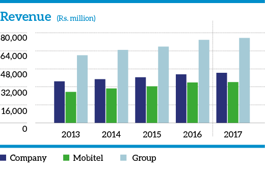
Expenditure
The operating costs of the Group increased by 1.6% to Rs. 54.5 billion. The operating costs of SLT decreased from Rs. 33.2 billion to Rs. 33.1 billion which was a drop of 1%. This was a clear indication that SLT had managed its costs well.
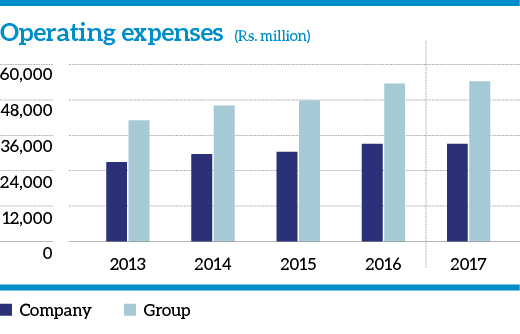
Profits
The Group recorded a profit before tax (PBT) of Rs. 5.5 billion for the financial year 2017. This was a YoY decrease of 8.5%, when compared with the figure of Rs. 6.5 billion recorded in 2016. The PBT was impacted by higher depreciation where the charge was Rs. 1 billion above 2016. The reason for the higher depreciation was due to the higher capital expenditure which was incurred by the Company during the last three years in order to build capacity and investments in new products.
The profit after tax (PAT) of the Group was recorded at Rs. 3.9 billion. When compared with the corresponding figure for the preceding year of Rs. 4.8 billion, this represented a YoY decrease of 17.7%. The drop in profitability was due to the increased depreciation.
At Company level, the PBT and PAT of SLT declined to Rs. 2.1 billion and Rs. 1.4 billion respectively due to the increased depreciation.
SLT Mobitel recorded a PAT of Rs. 3.3 billion in 2017, compared to Rs. 4.1billion recorded in the preceding year.
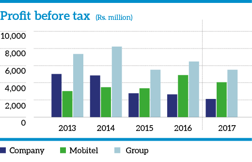
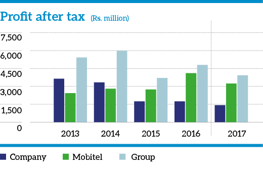
The Group EBITDA improved to Rs. 21.2 billion from Rs. 20.1 billion which was an increase of 5.4%. The Company EBITDA increased to Rs. 11.4 billion from Rs. 9.9 billion an increase of 14.9%.
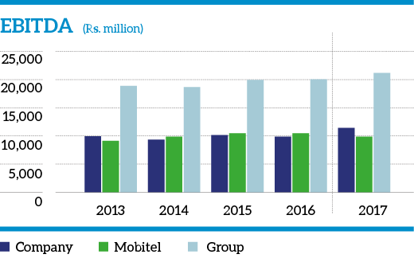
Return on equity
The return on equity (RoE) measures the profit attributable to shareholders as a percentage of their equity. The RoE in 2017 stood at 5.5% from 6.9% in 2016. For SLT as a Company, the ROE was 2.4% for 2017 and 2.9% in 2016. The main reason for the drop in the ROE was due to the increased depreciation and the increase in the asset base.
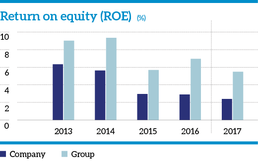
Interest cover
The Group interest cover was at 2.02 times in 2017, compared to 4.3 times in 2016. For SLT, this was .8 times in 2017; contrasted with 2.1 times in 2016. The Company's borrowings increased in 2017 compared to 2016 due to higher capital expenditure. The fall in profitability due to increased depreciation also had an adverse impact.
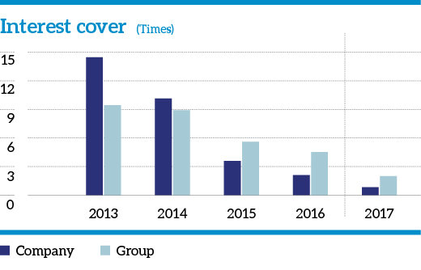
Gearing
The gearing ratio measures the proportion of a company’s borrowed funds to its equity. For the Group this ratio was 0.37 in 2017, compared to 0.32 in 2016. At the Company level, it was 0.40 in 2017; an increase from 0.33 in 2016. The main reason for the increased gearing was due to the increase in the borrowings in order to fund capital expenditure.
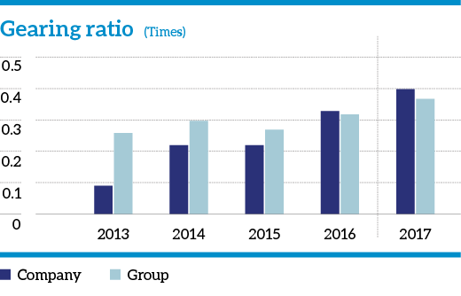
Assets
Non-current assets
The total non-current assets of the Group were Rs. 128.16 billion as at 31 December 2017. This was an increase of 11.0% from the figure of Rs. 115.45 billion recorded at the end of 2016. For SLT as a company, the total non-current assets were recorded at Rs. 109.88 billion, from Rs. 99.64 billion recorded in 2016; which represents an increase of 10.3%.
Property, plant, and equipment
The property, plant, and equipment of the Group increased to Rs. 117.0 billion in 2017, from Rs. 108.6 billion in 2016. This represented an increase of 7.7% at an increase of Rs. 8.4 billion. Of this figure, SLT accounted for Rs. 91.45 billion, compared to Rs. 81.5 billion recorded in 2016, representing an increase of 12.1%.
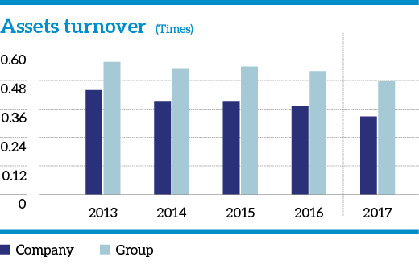
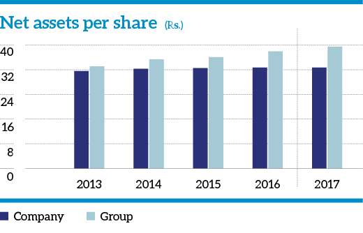
Segmental performance
The operations of the SLT Group are broken down into fixed ICT operations (the responsibility of SLT) and mobile ICT operations (which is overseen by Mobitel).
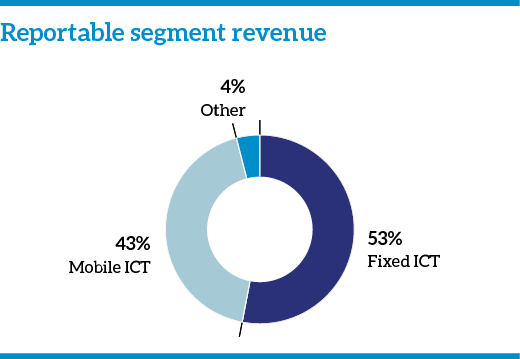

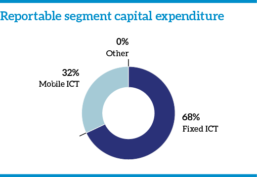
|
2017
Rs. million |
% |
2016
Rs. million |
% | |
| Value added | ||||
| Revenue | 75,741 | 73,801 | ||
| Other income | 2,247 | 2,000 | ||
| 77,988 | 75,801 | |||
| Goods and services purchased from other sources | (33,152) | (31,581) | ||
| Value creation | 44,836 | 44,220 | ||
| Distribution of value added | ||||
| To employees | ||||
| – Salaries, wages and other benefits | 17,117 | 38.18 | 17,398 | 39.34 |
| To providers of capital | ||||
| – Dividend to shareholders | 1,606 | 3.58 | 1,606 | 3.63 |
| To Government | ||||
| – Taxes and regulatory fees | 5,855 | 13.06 | 6,403 | 14.49 |
| To lenders | ||||
| – Interest and related charges | 637 | 1.42 | 1,229 | 2.78 |
| To business expansion and growth | ||||
| – Depreciation | 17,287 | 38.56 | 14,400 | 32.56 |
| – Retained income | 2,334 | 5.21 | 3,184 | 7.20 |
| 44,836 | 100.00 | 44,220 | 100.00 |
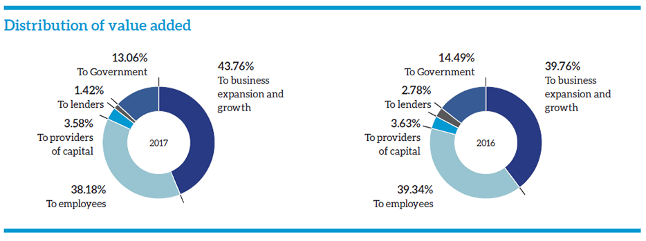
Subsidiaries review
SLT VisionCom (Private) Limited
SLT VisionCom is a fully-owned subsidiary of SLT group and the company mainly focuses on delivering services through SLT PEO TV, spearheading the PAY TV market with advanced features such as Time Shift TV, Video on Demand, Subscription Video on Demand, High quality digital imaging and many more. Company has shown a substantial stance in sourcing HD (High Definition) content to enhance customer viewing experience over the year.
SLT VisionCom has taken a step ahead to redefine its business in Video Content Aggregation, Development, and Broadcasting to align with the new strategic intent of being the largest Video Content Hub of the Country in entertainment, education, and information by year 2022. Company expanded its revenue streams by setting up brand new strategic business units in media buying, creative, sales, and PEO TV provisioning. The formation of new business units contributed to the growth of Company revenue by 93% YoY.
Business growth
An impressive growth was shown in PEO TV subscriber base of 31% YoY and revenue YoY grew by 29%. PEO TV has increased its contribution for SLT PLC revenue from 6% to 8% from prior year.
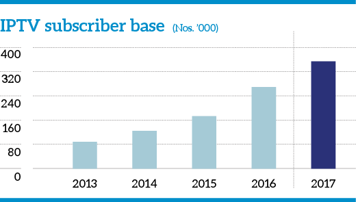
SLT PEO TV has increased its market share to 40% of the post-paid Pay TV market among licensed operators.
Performance review
Channels and content
- The channel offering was strengthened with the introduction of multilingual, sports, educational, business news, and international variety channels.
- The number of High Definition Channels was increased to enhance the viewing experience of SLT Fibre customers.
- As a whole On-Demand library has extended its diversity with the latest addition of Music on Demand (MOD) and has gained a substantial collection of new movies, tele-series for TVOD, and other content including many TV movie Premiers offered.
- Channel 365 and Event TV (fully-owned channels of PEO TV) have expanded generating a loyal following of viewers by increasing its content line-up.
Event TV has established its position as the only television channel dedicated for events and has set its platform to facilitate recorded and live events covering corporate functions, product launches, award ceremonies, musical events to live sports events including cricket, rugby, tennis, and many more.
Channel 365 has just passed its initial stages in defining its sphere as a unique variety channel formulating an all-in-one combination of many segments such as music, infotainment, business, sports, movies, education, and lifestyle. Channel 365 has taken initiatives in developing its own content to meet the growing desire of local content.
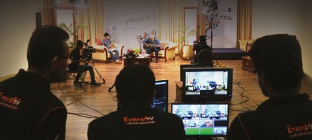
Enterprise solutions
PEO TV has reached over 8,000 TV points connected with enterprise solutions including hotels, hospitals, banks, apartments, sports centres, and Government authorities. An awareness campaign for Enterprise customers was executed to share knowledge and information targeting potential business areas such as Negombo, Nuwara Eliya, and Weligama.
IP Television system and new products
- Continuous improvements were made to TV Broadcasting to provide superior services to the valued subscribers and also making timely capacity enhancements to meet the growing demand.
- Offering multiple PEO TV connections over single line via fibre connectivity was introduced to meet the demand of high net individuals.
Challenges
New sales and usage of PEO TV services have been challenged by the prevailing tax of 49.67% to the end user. Further the increase of non-licensed operator businesses has been a growing threat to the Pay TV industry.
SLT Human Capital Solutions (Private) Limited
SLT Human Capital Solutions provide total HR solutions to both local and foreign markets. The Company headhunts on behalf of the SLT Group and other companies in both private and public sectors. The Company also sources skilled employees to foreign markets. The HR IT solutions for customers are provided through the web-based eMpower system which helps to automate all HR-related processes from recruitment to retirement. The Company also provides HR consultancy services in areas such as industrial relations, HR operations, HR strategy, and process development.
2017 Highlights
- Recorded a revenue of over Rs. 2 billion.
- Under the theme “Diversification and beyond”, the Company acquired reputed external clientele.
- Successfully established BPO solutions and entered into an agreement for providing services with a prominent company in the banking sector.
- Donated the 5th house under “
Sihina Niwasa ” housing project, teamed with the HCS Welfare Society, to an employee in Keppettipola.
Sri Lanka Telecom (Services) Limited
Sri Lanka Telecom (Services) provides ICT-based infrastructure solutions and acts as a system integrator to corporate customers and small businesses. With the realignment of the Company’s competitive strategies, the Company is focusing on strengthening its business areas, such as providing enterprise solutions, CCTV/Surveillance systems, PABX, Networking and Data Storage Solutions, Managed Services, Servers and the expansion of Regional Operations island-wide.
2017 Highlights
- Recorded a profit of Rs. 3 million. Compared to the marginal performances of the previous years, this can be considered as a stupendous achievement.
- Discovered new business opportunities through the Parent Company in FTTH PAT, Quality Checks Ongoing, and Broadband and PSTN Faults Clearing.
- Collaborating with SLT Enterprise Business Division and external entities from the public and private sector, SLTS began SI business.
- To monitor the behaviour of elephants and their habitat in the Elephant Orphanage at Pinnawala, SLTS installed the first sophisticated surveillance system.
- The staff from SLT PML joined with SLTS to further expand our operations.
SLT Digital Services (Private) Limited
The Company annually publishes SLT Rainbow Pages – The National Business Directory and it has diversified its publications where it publishes industry-specific directories such as the tourist directory and wedding directory etc. The Company also develops web portals, apps, call centre services, directory CDs, and e-Directory using digital technologies. Apart from the directory business, the Company offers total advertising solutions and event management and activation solutions. Since the services which the Company offer have diversified into various fields the SLT Group decided to rebrand the Company by changing its name SLT Publications (Private) Limited to SLT Digital Services (Private) Limited which encompasses the broad spectrum which the Company operations cover and paves the way forward to create an impact in the sphere of digital services.
As the national directory information provider for the nation we have further increased accessibility to information. By dialing 444, directory services have been made available to Dialog, Mobitel, and Etisalat customers as well, while directory services are available to SLT customers when they dial 1212.
In addition, the Rainbow Pages’ highly diversified business information is regularly updated, to provide the most accurate and most comprehensive information to the general public. The classified business section of the directory contains over 1,300 product and service categories and contact information of over 16,000 supplier listings. In addition, information on Government institutions, religious organisations, and other organisations is also available. This directory is also available in all Sri Lankan embassies throughout the world.
The Rainbow Pages achieved a major milestone in 2010 with the Government conferring the noteworthy title of its being the only source directory for all public departments and institutions. Named by the Government as the common directory for the listing of suppliers of goods and services to all state institutions, the Finance Ministry recommended that all state institutions including ministries, Provincial Councils, Government departments, state corporations statutory boards, local government institutions, authorities, and state-owned companies use the Rainbow Pages to find suppliers for their procurement needs.
2017 Highlights
- The flagship directory: SLT Rainbow Pages Western Province was published and distributed during the year.
- The Rainbow Pages web portal and mobile application saw informational and technological improvements throughout the year and show a remarkable growth of visitors and display advertisements.
- The Company continued to expand our event management and activation solutions and was able to undertake almost all the major SLT events during the year.
- The Company will introduce a wide range of digital products such as search engine marketing, online display advertising, social media marketing, website creations, and other IT services for customers in addition to the existing Rainbow Directory products. This will align with SLT Group Vision 2022.
SLT Campus (Private) Limited
SLT Campus (SLTC) is the first corporate powered, fully residential engineering university in Sri Lanka. SLTC distinguishes itself from other universities with its heavy focus on research. Office of Research and Innovation Services (ORIS) employs more than 15 research assistants working on cutting-edge research projects. SLTC allocates a significant funding for research and part of it comes from collaborations. ORIS has established research partnerships both locally and internationally.
SLTC's custom-designed Engineering and Technology Degree programmes are ideal platforms for those students with good national or London A/L results in the streams of Physical Science, Biology, ICT and Agriculture. The Engineering Degree programmes offered by SLTC are fully-accredited by the Ministry of Higher Education and Highways and recognised by the University Grants Commission (UGC).
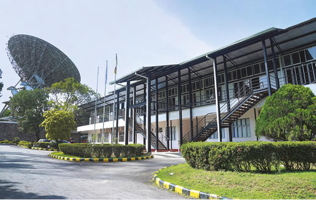
2017 Highlights
- SLTC ended the financial year 2017 by securing a formidable place in the Engineering Higher Education Industry. The third batch of the campus enrolled in March 2017 with a total intake of 250+ students. The revenue and student population of the Campus from its inception in 2016 is shown below:
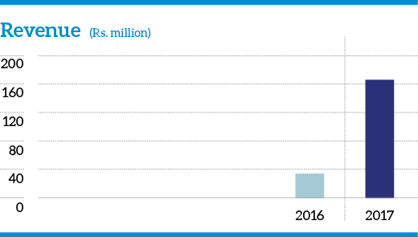
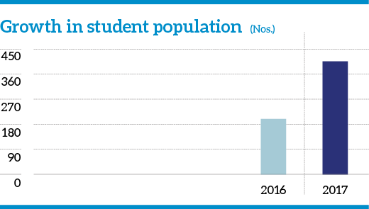
- SLTC has commenced the construction of a state-of-the-art hostel facility for 400 students.
- Annual International Research Symposium on Industrial Systems (INSYS) was held in 2017. The first event, INSYS 2017 under the theme of Innovations for a Sustainable Future was organised by ORIS with over 200 participants, on 18 December 2017.
- Academic partnerships were established with Lancaster University UK, Deakin University in Australia, Lincoln University in New Zealand, and the Royal Melbourne Institute of Technology (RMIT).
- ZTE Corporation has set up a state-of-the art telecommunication laboratory at SLTC with modern mobile communication devices.
- Xtera Corporation in UK has also donated a list of equipment to enhance the telecommunications lab. This includes network analysers, function generators, oscilloscopes, and many other items related to optical fibre communications.
- There were a number of extra-curricular activities conducted during the year by Student Interactive Society, LEO Club, the Media Unit, Art Circle, and the Gavel Club, etc.
- SLTC talent show dubbed EL MISTICO 2017 was held in October at the SLTC auditorium. Colleges competed against each other in the categories of debate, quiz, singing (solo and group), dancing (solo and group) and art.
- The following degree programmes will be introduced in 2018: BTech (Hons) in Agriculture Technology and BTech (Hons) in Environmental Technology.
Galle Submarine Cable Depot (Private) Limited
This will be South Asia’s first state-of-the-art Submarine Cable Depot in Galle port which will be operated and managed by SLT.
SLT will operate the cable depot in Sri Lanka as a Joint Venture, “Galle Submarine Cable Depot Private Limited” (GSCDPL) with IOCPL (Indian Ocean Cableship Pte Limited) which is a ship service provider for SEAIOCMA (South East Asia & Indian Ocean Cable Maintenance Agreement). IOCPL is a Joint Venture Company of Singtel Singapore and Orange France. Newly formed GSCDPL will be a depot service provider under the SEAIOCMA from 1 January 2018 onwards.
SEAIOCMA is the international consortium for maintaining the undersea cables. Sri Lanka is an important destination where multiple cable systems are already in operation passing the country. Sri Lanka will be the only Submarine Cable Depot in the South Asian region. SEAIOCMA is an agreement among the telecom submarine cable operators, cable ship operators and cable depot operators for providing submarine cable maintenance spanning the area between Djibouti in the west, Perth in the South, Guam in the East and the northern tip of Taiwan. Prior to this initiative, Singapore was overlooking the Submarine Cable Depot to facilitate international cable systems. Through this operation in the South Asian region, SLT believes in the possibility of bringing in foreign currency to strengthen the country’s economy in the future.
Galle Port has been selected to set up a submarine cable depot by the cable consortium with the participation of a number of countries and Sri Lanka will facilitate the cable maintenance ship berth and warehouse facility.
eChannelling
eChannelling PLC is the pioneer software development and ICT service provider to the Healthcare industry in Sri Lanka. It is the largest channelling network in Sri Lanka with over 4,500 medical professionals. The eChannelling platform connects over 210 hospitals island-wide. It bridges the gap between healthcare providers and the public by improving effectiveness and efficiency of service consumption in a user-friendly way. Patients can make appointments via eChannelling by dialling 225 from any mobile network and 1225 from an SLT phone. Appointments can also be made through the eChannelling Mobile App, web and 2000+ agents islandwide (Post offices, SLT branches, banks, and pharmacies). The service is not limited to channelling doctors, and users can contact various third parties and health service providers for additional benefits.
2017 Highlights
- In 2017, SLT extended the eChannelling service to Smartline and 4G LTE customers with a call charge of Rs. 1.50 per minute.
- eChannelling earned the ISO 9001:2015 certification and version upgrade as a measure of the consistent quality of the products and services it offers in order to enhance service standards.
- Revenue – Rs. 129,009,036/-
- NPAT – Rs. 35,571,692/-
- ROE – 14.78%
- Total Assets – Rs. 328,414,485/-
SLT Property Management (Private) Limited
Management of SLT’s real estate resources. SLTPM was floated in 2013 with the aim of developing the large number of unutilised/underutilised properties under SLT’s ownership. Given the growing demand for property in Sri Lanka, it was strongly felt that such idle lands could ideally be channeled towards more lucrative avenues that would not only enhance the value of the property, but also have a positive impact on the SLT Group bottom line.